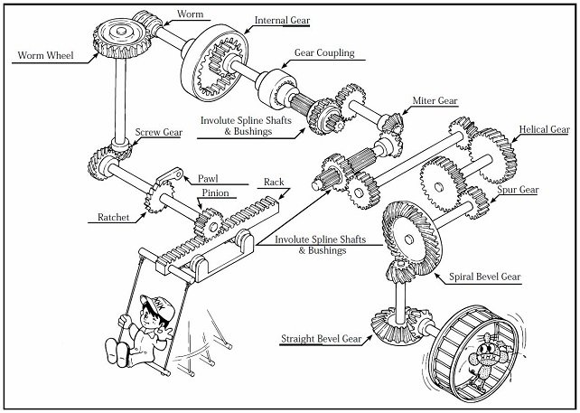
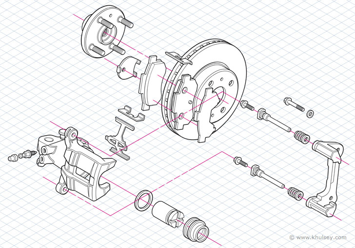

Geared Lolly Dispenser Project Instructions
Project brief
Design and build a geared lolly dispenser that reliably dispenses one lolly per handle cycle. Use gear ratios/cams/ratchets to control motion, then test reliability and improve the mechanism using evidence.
- Function: Dispense one lolly per cycle (no doubles) with consistent operation.
- Gear train: Calculate and justify gear ratio (turns-per-dispense) and layout.
- Safety: Stable base, retained shafts, guards where needed, and safe testing procedure.
- Reliability: Run 50-100+ cycles and calculate reliability % with a jam/failure log.
- Evidence: CAD screenshots/drawings, build photos, and test data tables/graphs.
What \"good\" looks like: smooth gear mesh, correct clearances, controlled one-at-a-time gating, and improvements justified with test results.
Materials & evidence
- Materials: timber/sheet goods for frame, acrylic/ply guards (if used), shafts/axles, fasteners.
- Mechanism: gears, cams/ratchet parts, hopper/gate, handle and any guides to prevent jams.
- Testing: same lolly type/size, cycle counter, jam log, and (optional) effort measurement.
Hand in: a folio/report with design brief & criteria, gear ratio calculations, CAD pack, build log, and reliability results with evaluation.


Build steps
Interpret the brief
Confirm success criteria (one-per-cycle, safety, size/constraints) and how reliability will be tested.
More tips
- Turn the brief into a checklist (function, reliability target, safety/guarding, ergonomics).
- Decide what counts as a failure (jam, double dispense, partial dispense, dropped lolly).
- Plan evidence capture early: CAD screenshots, photos at key build stages, test tables.
Quick check: Do you know exactly how "one cycle" will be defined and measured?
Design the gear train & gate
Choose gear tooth counts and a mechanism (gate/cam/ratchet) that releases one lolly per cycle.
More tips
- Calculate turns-per-dispense from your ratio and show working.
- Design for clearance: allow lollies to pass without catching, but prevent doubles.
- Include a stop/limit so the mechanism returns to a consistent "home" position.
Quick check: Can your design prevent doubles even when lollies are stacked?
CAD pack & drawings
Model the assembly, check motion/clearances, then produce cutting lists and drawings.
More tips
- Group parts logically (frame, gear train, hopper/gate, guards) and label clearly.
- Dimension shaft holes and centre distances carefully (gear mesh depends on it).
- Export what you need for manufacture (DXF/prints) and keep versions organised.
Quick check: Could someone else build it using only your CAD pack?
Cut and prepare parts
Cut accurately, drill square holes, and finish edges so parts assemble without binding.
More tips
- Accuracy matters most for shafts and gear centres—measure twice, drill once.
- Deburr and sand edges to reduce friction and snag points in the hopper/gate.
- Dry-fit early so errors are caught before final assembly.
Quick check: Do gears spin freely on shafts without wobble?
Assemble and tune
Align shafts, set gear mesh, add guides/guards, and tune clearances for smooth operation.
More tips
- Use spacers/washers to prevent rubbing and keep gears aligned.
- Fix binding by correcting alignment/centre distance—not by forcing the handle.
- Secure the hopper and gate so it can't shift during repeated cycles.
Quick check: Does the handle turn smoothly with consistent resistance?
Reliability test & evaluate
Run 50-100+ cycles, log failures, calculate reliability %, then propose improvements.
More tips
- Start unloaded to find high-friction points, then run loaded cycles.
- Track failures by type (jam/double/partial) to target improvements.
- Support evaluation with data, photos, and user feedback (3-5 testers).
Quick check: Do you have a table of results and a calculated reliability %?
Quick checks
- Are shafts aligned and retained (no wobble, no loose fasteners)?
- Is gear mesh smooth (no binding) and centre distances correct?
- Does the gate reliably dispense one lolly per cycle (no doubles)?
- Have you recorded gear teeth counts, predicted ratio, and turns-per-dispense?
- Have you run 50-100+ cycles and logged jams/failures?


YouTube clips
Watch the curated Term 4 video clips for this project.
Term 4 Assessment Task: Task 2 - Geared Lolly Dispenser Project
This is a summative assessment task worth 40% of your Year 9 Engineering grade. Submit your complete Geared Lolly Dispenser project folio by Week 6, Term 4.
Task Overview
Design, build, and test a geared lolly dispenser with compound gears, cams, and ratchets. Document your complete process from design through testing and evaluation in a comprehensive project folio.
Key Requirements:
- Design dispenser with gear systems, cams, and ratchets
- Use CAD/Onshape for design and production drawings
- Build dispenser using CAD-CAM workflows
- Conduct systematic reliability testing (50-100+ cycles)
- Compare predicted vs measured performance
- Evaluate and propose realistic improvements
Google Classroom Topics (Term 4)
How to use these links: Complete the Classroom tasks alongside the matching topic so your CAD, CAM and build work stays aligned. Upload screenshots, exports and test notes as you go.
- Topic 1 – Timber Materials: Timber Materials
- Topic 2 – Onshape & CAD Mastery: Onshape Tutorials
- Topic 3 – CAMs & Gears: CAMs & Gears
- Topic 4 – Testing & Showcase: Upload final dispense tests, QA checklists and showcase assets via your class stream.
Scope & Lesson Plans
Overview of Requirements
Term 4 focuses on the Geared Lolly Dispenser project - your capstone mechanism build. You will design, build, test, and showcase a functional geared dispenser with compound gears, cams, and reliability testing.
- Gear Systems & Mechanisms: Understand compound gear trains, gear ratios, cams, ratchets, and how they work together in a dispensing mechanism.
- Design & Planning: Design your dispenser layout, calculate gear ratios, plan cam profiles, and develop build sequences.
- Materials & Manufacture: Select appropriate materials (timber, sheet goods), plan fabrication, and use CAD-CAM workflows for production.
- Build & Assembly: Construct frame, mount gears, install cams/ratchets, add guards, and assemble complete dispenser.
- Testing & Reliability: Conduct systematic reliability testing (50-100+ cycles), log jams and failures, measure torque/effort, and iterate improvements.
- Evaluation & Showcase: Complete comprehensive folio, evaluate performance, and present your working dispenser.
Outcomes Alignment (IND5)
- IND5-1, IND5-3, IND5-4: WHS, SWMS, tool/machine setup, safe CAM/laser/CNC use and guarded mechanisms.
- IND5-2, IND5-5, IND5-7: Advanced CAD, assemblies, BOMs, costing, production drawings and build sequencing.
- IND5-6: Collaborative build/test cycles; peer QA and shared risk controls during fabrication.
- IND5-8, IND5-9, IND5-10: Sustainability of materials and processes, design evaluation, communication and showcase presentation.
Post-2027 Outcomes Alignment (EGT5)
As the syllabus transitions, these post-2027 Engineering Technology outcomes connect to the advanced manufacturing and showcase phases of your capstone project:
- EGT5-SAF-01 & EGT5-ENV-01: Student-friendly summary (not official wording): Apply WHS procedures for CAM machinery (laser/CNC) and finishing tools while evaluating material sustainability and minimising waste during production.
Official wording: EGT5-SAF-01 — applies risk management and safe work practices in engineering contexts; EGT5-ENV-01 — analyses relationships between engineering design, production and sustainability. - EGT5-COM-01 & EGT5-GRP-01: Student-friendly summary (not official wording): Communicate professional engineering solutions through complex CAD assemblies, production drawings and BOMs, supported by clear technical graphics and documentation for manufacture and presentation.
Official wording: EGT5-COM-01 — communicates ideas, concepts and solutions for engineering practice; EGT5-GRP-01 — develops and applies technical graphics in engineering contexts. - EGT5-EVL-01: Student-friendly summary (not official wording): Investigate and evaluate the manufacturing process and final product quality by analysing tolerance data, dispense consistency and user feedback.
Official wording: investigates and evaluates engineering systems and solutions. - EGT5-MEA-01: Student-friendly summary (not official wording): Analyse the mechanical performance of the completed gear train and dispensing mechanism, calculating torque requirements and identifying friction points.
Official wording: applies mechanical analysis and practical testing to investigate engineering concepts. - EGT5-USE-01: Student-friendly summary (not official wording): Select and justify timber and sheet materials for specific structural and mechanical roles, considering grain direction, finish and manufacturability.
Official wording: selects and applies materials for engineering projects. - EGT5-IVT-01: Student-friendly summary (not official wording): Connect classroom manufacturing to industry practice by applying CAD-CAM workflows, tolerance checks and quality control standards used in engineering production.
Official wording: explains engineering practices and the influence of technologies used in engineering industries.
Assessment & Folio Checklist

Your Term 4 folio should clearly show your CAD-CAM workflow, build quality, reliability testing, and evaluation for the Geared Lolly Dispenser project.
- Safety Documentation: Completed SWMS and safety evidence for CAM machinery (laser/CNC), drill press/sanding, and safe handling of moving/pinch-point mechanisms.
- CAD Pack: Onshape assemblies, drawings, and DXF/DWG exports with clear labels, title blocks and revision notes.
- Manufacturing Evidence: Cut files/toolpaths (where used), kerf/fit checks, photos of assembly steps and guarding.
- Testing Data: Predicted vs measured performance (gear ratio/turns-per-dispense), reliability/jam log (50–100+ cycles), and observations on effort/torque and durability.
- Evaluation & Showcase: What failed first (and why), improvements made (or proposed), plus a short showcase script/board with final photos/video.
Hands-on & Theory (Term 4 Program)
- Timber/material prep: select stock, plan cuts, practise safe sawing/drilling/sanding.
- CAD refinement: configs/variables, mates, drawings, export-ready DXF/DWG.
- CAM & fabrication: kerf allowances, toolpaths, safe machine setup, part cutting/printing.
- Assembly & tuning: gears/cams/ratchet alignment, guards, fasteners/adhesives.
- Testing & iteration: dispense trials, jam fixes, torque/effort checks, durability runs.
- Folio & showcase: data tables/graphs, sustainability + safety summaries, presentation assets.
Resources & Differentiation
- Materials: ply/timber sheets, acrylic guards, shafts/dowels, fasteners, adhesives.
- Digital: Onshape accounts, laser/CNC software, DXF/DWG export guides.
- Scaffolds: SWMS templates, kerf/fit checklist, costing spreadsheet, folio structure.
- Differentiation: exemplar CAD packs, simplified cut files, multilingual captions, extension to multi-flavour/dual-cam mechanisms.
Week Plan Snapshot (Guide)
- Weeks 1-2: Complete Toolkit 1 (Gear Systems & Mechanisms theory) and Toolkit 2 (Geared Lolly Dispenser Design). Understand compound gears, cams, ratchets, and design your dispenser.
- Weeks 2-4: Build your dispenser (Toolkit 3). Select materials, use CAD-CAM workflows, fabricate parts, and assemble mechanisms.
- Weeks 4-6: Testing and reliability (Toolkit 4). Conduct systematic reliability testing, log jams and failures, measure performance, and iterate improvements.
- Weeks 7-8: Complete folio and evaluation. Document your entire project, evaluate performance, and prepare showcase presentation.
- Weeks 9-10: Showcase and final submissions. Present your working dispenser and submit final folio, CAD pack, and SWMS documentation.